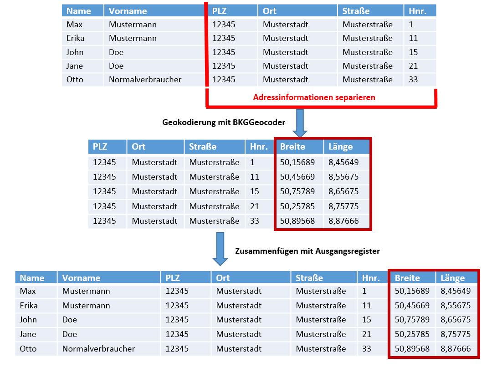

Vorwort
Mit der Geokodierungsanwendung des BKG können Sie Register mit massenhaften postalischen Adressen, Ortsnamen oder Postleitzahlen einfach automatisch geokodieren – also Koordinaten zuweisen. Zusätzlich bietet die Applikation die Möglichkeit der manuellen Kontrolle und Verbesserung der automatisch ermittelten Geokodierungsergebnisse. In den folgenden Kapiteln werden die einzelnen notwendigen Schritte hierzu beschrieben, sowie Empfehlungen zur Vorbearbeitung von Registern zur Steigerung der Geokodierungsqualität gegeben.
Tipp
BKG-Angebot
Das BKG hat noch weitere interessante Geodaten, Karten, Internetdienste, Anwendungen und Serviceleistungen für Sie im Angebot. Werfen Sie doch einmal einen Blick auf die Seiten des Geodatenzentrums www.geodatenzentrum.de oder lassen Sie sich direkt durch einen Mitarbeiter unseres DLZ informieren.
Allgemeine Hinweise/Vorgehensweise
Unter Geokodierung versteht man die Zuweisung eines direkten Raumbezuges (Koordinaten)
zu einem Objekt. Die Geokodierung kann manuell oder automatisch erfolgen. In der
Regel arbeitet die automatische Geokodierung mit einem hinterlegten Referenzdatensatz,
welcher den Raumbezug beinhaltet.
Folgendes Schema beschreibt die Vorgehensweise
zur massenhaften Geokodierung von Registern mit dem BKGGeocoder:

Der BKGGeocoder verwendet zur Geokodierung die sehr effizienten Webdienste (siehe Dokumentation BKG Webdienste) des Dienstleistungszentrums des BKG. Neben der Nutzung der Dienste im BKGGeocoder haben Sie auch die Möglichkeit, die Dienste direkt in Ihre eigenen Anwendungen bzw. Ihren eigenen Workflow einzubinden. Hierzu verfügen die Dienste über standardisierte maschinenlesbare Schnittstellen. Weitere Informationen hierzu können Sie zudem von den unter Kontakt genannten Stellen erhalten.
Die Dienste nutzen folgende Datensätze als Referenzen zur Geokodierung:
- Georeferenzierte Adressdaten (GA), siehe Beschreibung
- Geographische Namen Deutschland (GN250), siehe Beschreibung
Der BKGGeocoder beschränkt sich auf das deutsche Staatsgebiet. Europaweite bzw. weltweite Geokodierungen sind nicht möglich.
Achtung
Maximale Anzahl Adressen
Der BKG Geocoder ist auf die Bearbeitung von maximal 100.000 Adressen limitiert. Sollten Sie größere Dateien verarbeiten wollen, empfehlen wir Ihnen die Aufsplittung in mehrere einzelne Dateien.
Vorverarbeitung und Datenaufbereitung
Der BKGGeocoder erwartet zur automatischen Geokodierung Register im CSV-Format (Comma-Separated-Value). In der Kopfzeile (erste Zeile) der Datei sollten prägnante Werte als Überschriften angegeben werden, dies führt zu einer erheblichen Vereinfachung der späteren Geokodierung (siehe Feldzuweisung).
Die Anwendung unterstützt die nachfolgend gelisteten gängigen Zeichenkodierungen für CSV-Inputs: UTF-8, ANSI
Die Download-Datei (siehe Download der Ergebnisse), inkl. der Geokodierungsergebnisse, wird allerdings lediglich in UTF-8 Kodierung ausgegeben.
Im Folgenden wird der Export von Registern aus der Software Microsoft Excel 2013 beschrieben:
Beispielhaftes Register mit BKG-Standorten und Messstationen
Datei -> Exportieren -> Dateityp ändern -> CSV (Trennzeichen-getrennt) -> Speichern unter
Empfehlungen zum Datenschutz
Wir weisen Sie darauf hin, dass die Übermittlung von sensiblen bzw. personenbezogenen Informationen an die Anwendung gegen geltende Datenschutzregelungen verstoßen kann. Daher empfehlen wir Ihnen, sensible Informationen vor der Geokodierung aus Ihrem Eingabe-Register zu separieren. Die Anwendung benötigt zur Geokodierung ausschließlich die Adressinformationen. Die Register können nach der Geokodierung wieder problemlos zusammengefügt werden (siehe Abbildung unten). Sowohl der Upload Ihrer Daten als auch die Verbindung des BKGGeocoder zum Geokodierungsdienst sind gesichert. Der BfDI (Bundesbeauftragte für Datenschutz und die Informationsfreiheit) hat das BKG bzgl. des Datenschutzes bei der Implementierung der Anwendung beraten und hat ansonsten keine weiteren Einwände.
Tipp
CSV-Dateien
Das CSV-Format ist ein sehr gängiges Format zum Austausch von strukturierten Datenbank- und Registerinhalten. In der Regel bietet jedes System (Datenbanken, Excel usw.) zur Haltung und Verwaltung umfangreicher Register Möglichkeiten zum Export in CSV.
Eingabedaten
ToDo
Ergebnis
ToDo
Nachbaradresssuche
ToDo
Ergebnisse inspizieren
ToDo
Kontakt
Für Auskünfte zu den online Geokodierungsdiensten des BKG steht Ihnen das:
|
Dienstleitungszentrum des BKG E-Mail: dlz@bkg.bund.de Tel. 0341-5634-333 Fax. 0341-5634-415 |